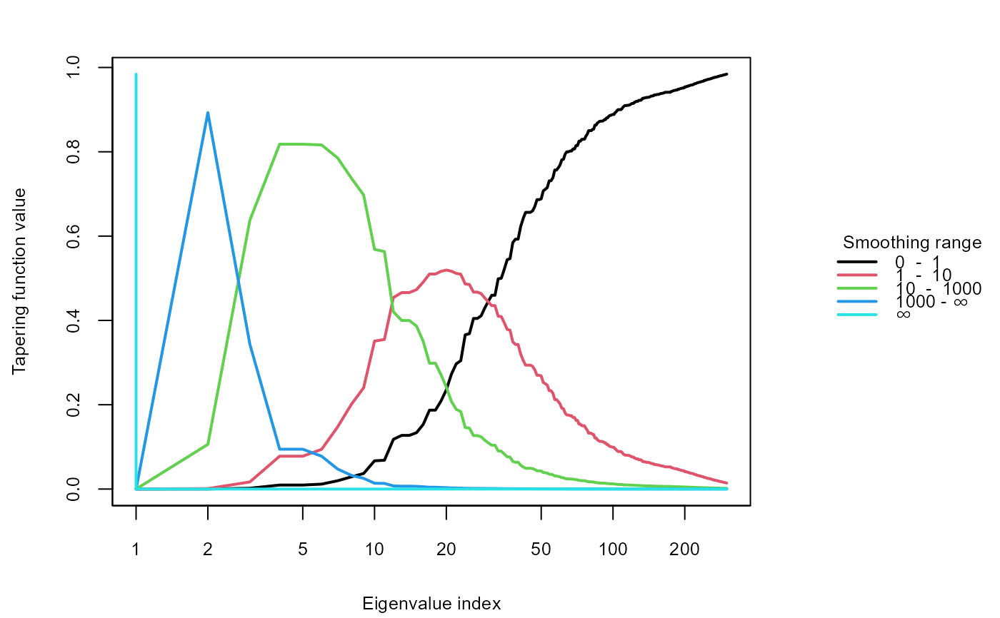
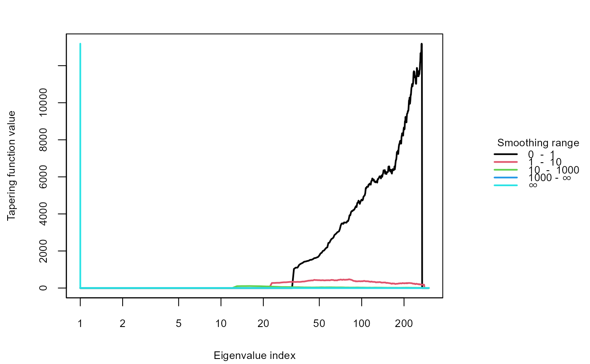

Tapering functions corresponding to the smoothing levels in lambdaSmoother
are drawn. This plot helps to assess if the chosen smoothing levels are
appropriate.
Arguments
- lambdaSmoother
Vector consisting of the smoothing levels to be used.
- mm
Number of rows of the original input object.
- nn
Number of columns of the original input object.
- Xmu
If availabe, posterior mean of the input object.
- returnseq
instead of plotting return the tapering sequences.
- ...
Further graphical parameters can be passed.
Value
Plots of the tapering functions for all differences of smooths at neighboring scales are created.
Details
The tapering functions of the smoothing levels chosen should be generally approximately disjoint. This will produce features which are somewhat orthogonal. With orthogonal features, it is likely that each difference of smooths corresponds to a different pattern in the input image.
Sometimes, not all patterns of the input image can be extracted using smoothing levels whose tapering functions are disjoint. It might then be necessary to include additional smoothing levels, and the disjointedness might not be satisfied anymore. The selection of appropriate smoothing levels with this method therefore requires some user interaction. Still, choosing disjoint tapering functions for finding appropriate smoothing levels is a good starting point.
Better results could be obtained if the structure of the posterior mean of
the input is also taken into account. If the posterior mean is available,
it can be added with the argument Xmu and moving averages of the absolute
values of the signal-dependent tapering functions are drawn. MinLambda
offers a more formal approach of optimizing the disjointedness of the tapering
functions and can help finding appropriate smoothing levels when the input
signal is taken into account.
Examples
# Signal-independent tapering function plot for a 30-by-10 object with
# the smoothing parameter sequence [0, 1, 10, 1000, inf]:
TaperingPlot(lambdaSmoother = c(1, 10, 1000), mm = 30, nn = 10)

# Signal-dependent tapering function plot for a 30-by-10 object with
# the smoothing parameter sequence [0, 1, 10, 1000, inf]:
set.seed(987)
xmuExample <- c(stats::rnorm(300))
TaperingPlot(lambdaSmoother = c(1, 10, 1000), mm = 30, nn = 10,
Xmu = xmuExample)
